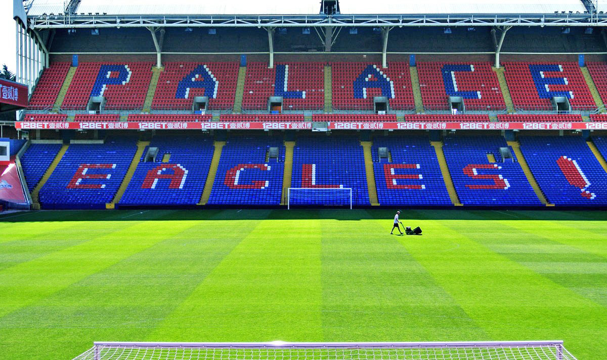
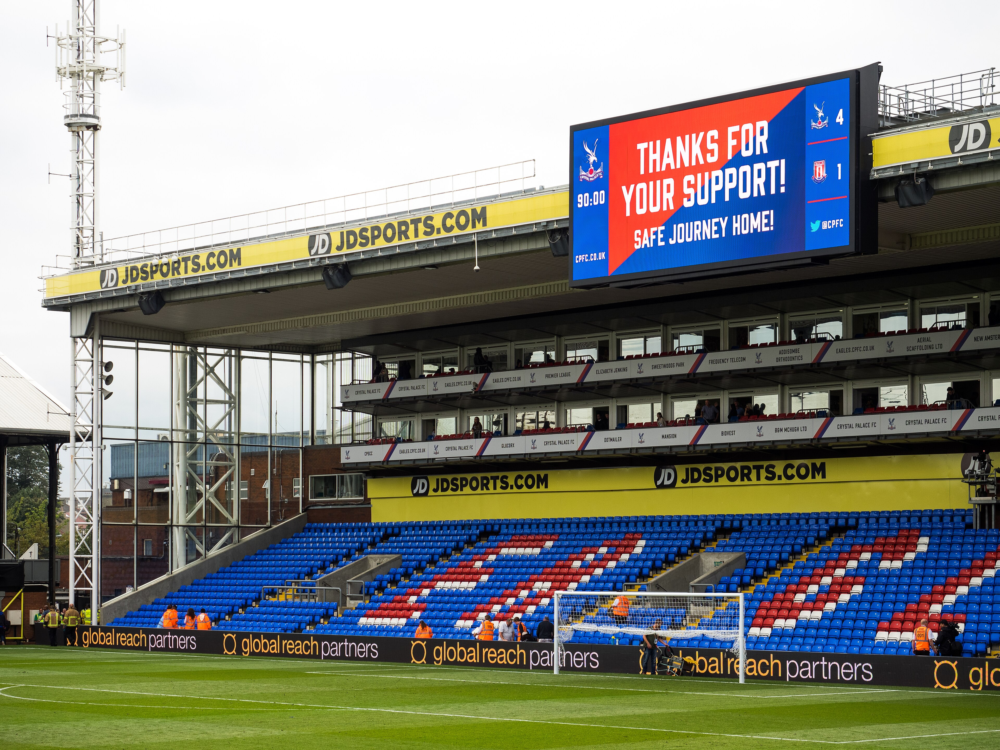

History

Selhurst Park is a football stadium in Selhurst, in the London Borough of Croydon, England.

The stadium was designed by Archibald Leitch and opened in 1924. It has hosted international football, as well as games for the 1948 Summer Olympics. Selhurst Park is owned by Crystal Palace F.C and has a capacity of 25,486.
Selhurst Park is made up of 4 stands.

Holmesdale Road Stand, Arthur Wait Stand, Main Stand, and Whitehorse Lane Stand.